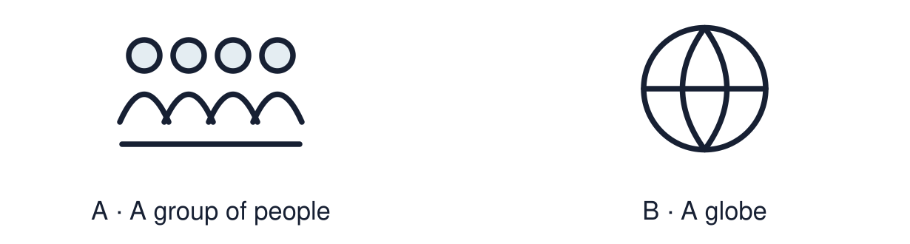

Arrival choices
You can begin without previous learning. Word help: religion means an organised set of beliefs, practices and community.

Start with 1 and 2. Try 3 and 4 when ready. Reading and exact scribing are available.
1 What does religion mean?
Support: Use the reminder strip or talk it through with an adult.
2 Which meaning fits religion?
Support: Choose: An organised set of beliefs, practices and community OR The way a person sees life and what matters.
3 Name two different worldviews found in Britain.
Support: Use the model evidence anchor A, C or read one relevant card together.
4 Does a non-religious person have beliefs and values?
Support: Give a reason when ready.
Stretch: use a precise example or explain which detail supports your answer.
Evidence cards
Read, point or listen. Keep the source label with any detail you use.
A Hannah
Fictional profile: Hannah is 14 and Christian. She goes to church with her gran and prays before exams. She says her faith helps her stay calm.
Source: Authored profile
Limit: This is one person's view. Others who share the worldview may describe it differently.
B Imran
Fictional profile: Imran is 15 and Muslim. He prays, fasts in Ramadan and helps at a mosque food bank.
Source: Authored profile
Limit: This is one person's view. Others who share the worldview may describe it differently.
C Ellie
Fictional profile: Ellie is 14 and non-religious. She calls herself a Humanist. She thinks people should use reason and kindness to decide what is right.
Source: Authored profile
Limit: This is one person's view. Others who share the worldview may describe it differently.
D Worldviews in Britain
The 2021 census for England and Wales found Christianity was the most common religion, and about 37% of people said they had no religion. Islam, Hinduism, Sikhism, Judaism and Buddhism were also recorded.
Source: Authored summary of Office for National Statistics census 2021 headline results
Limit: A census counts what people tick. It cannot show how they live their beliefs.
Shared investigation
1. Match each clue to the worldview it fits.
2. Say which word in the clue helped you decide.
Work with a partner or adult, or use your own table. One person suggests; the other checks the evidence. Swap after one turn. Passing is allowed.
Move or match the cards
| Cards to use |
|---|
| Uses reason and kindness, follows no religion |
| Fasts in Ramadan |
| Prays before exams and goes to church |
Possible labels: Christian / Humanist / Muslim
Support: Read one evidence card together. Highlight a useful detail. Rehearse with: One worldview in our community is ___. A clue is ___.
Further challenge: Explain why a non-religious person still has a worldview.
Supported independent task
Complete this route only. Identify different beliefs and worldviews in our community.
1. Place two profile cards on the community map.
2. Label each with its worldview from the word bank.
3. Point to one clue for each.
Support: Read one evidence card together. Highlight a useful detail. Rehearse with: One worldview in our community is ___. A clue is ___. Complete the organiser one space at a time. One worldview in our community is ___. A clue is ___.
An adult may read or scribe your exact response. They should not choose the answer.
Standard independent task
Complete this route only. Identify different beliefs and worldviews in our community.
1. Place the three fictional profiles on the community map.
2. Label each worldview.
3. Add one clue from each profile.
Support: One worldview in our community is ___. A clue is ___.
Check the required evidence and revise one detail.
Stretch independent task
Complete this route only. Identify different beliefs and worldviews in our community.
1. Complete the map with all three profiles and clues.
2. Add one fact from the census card.
3. Explain what a census cannot tell us about belief.
Support: Choose the evidence independently. Use the frame only if it helps.
Explain why a non-religious person still has a worldview.
Exit ticket
Choose a response mode. You may give your answers privately to an adult.
Name two different worldviews found in Britain.
Does a non-religious person have beliefs and values?
Support: One worldview in our community is ___. A clue is ___.
Further challenge: Explain why a non-religious person still has a worldview.